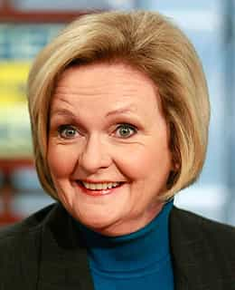

< < < Back
Feminists Manufacture Rape Straw Man Against “Game Of Thrones” – Return Of Kings
In the sixth episode of Game of Thrones‘ fifth season, Sansa Stark is raped by Ramsay Bolton after their nuptials. True to form, feminists and other SJW-inclined critics have lambasted the scene, despite the rape being heard off-camera. Contrasting the litany of gratuitously violent scenes revealed visually throughout Game of Thrones, you never see the actual rape.
This hasn’t stopped feminists and other do-gooders from “quitting” the show, attacking the producers, or doing everything but assessing the scene in the context of the overall storyline and society it depicts. Feminist priestess Jessica Valenti is heading this new charge, hoping her grandstanding and dystopian appropriation of expressio unius est exclusion alterius will lead to another paid Guardian article.
Yet, for all the accusations of sexual violence in Game of Thrones, such renderings are deliberately toned down to placate censors who are much more at ease with blood splattering than showing forced sex. The focus was on Theon Greyjoy’s face after he is forced to watch Ramsay ravage Sansa. The question is, though, in addition to us not seeing her plight, did Sansa suffer any more than the hundreds of others viewers have watched being massacred, mutilated and degraded on Game of Thrones, sexually or non-sexually?
For a nice juxtaposition, watch the footage of the death of Oberyn Martell last season and compare it to the off-camera Sansa rape. I didn’t see Jessica Valenti calling the former “over-the-top” and “gross.”
A deliberate distortion of facts
In one of the books on which the show is based, Ramsay Bolton actually rapes Jeyne Poole, who is posing as Arya Stark, on their wedding night. This written account is much more graphic, including the use of bestiality. Poole is made to perform sexual acts on Ramsay’s dogs.
The feminist argument this week, that the Sansa rape is an invention designed to shock, is preposterous. All that has happened in the translation to television is that a pretend Arya Stark has been, for the sake of the shorter format, replaced by the real Sansa Stark. I note that no feminists seemed outraged when the show deviated from the books in having female warrior Brienne of Tarth defeat Sandor Clegane, one of the half-dozen best swordsmen on an entire continent.
Democratic Senator Claire McCaskill has joined the recent fray, excoriating the episode. Having observed McCaskill’s relish in helping to slowly destroy the presumption of innocence for sexual assault allegations, particularly in the military, I am surprised that she has even had the time to watch the show. She has apparently taken the route of confirmation bias viewing, as she glosses over a multitude of sadistic scenes that are either other forms of violence or sexual violence unleashed on men (for instance, how about the army of enslaved eunuchs for Queen Daenerys?).
Jessica Valenti and Senator Claire McCaskill’s “Hypocrisy 101” class

Senator Claire McCaskill is a raging hypocrite for calling out a rape scene that wasn’t even shown, only heard. She deliberately ignores the sensationalized violence pictured in full detail across five seasons.
Where were Jessica Valenti and Claire McCaskill when Theon Greyjoy had his penis cut off, only for it to be sent in a box to his father? Once again, Valenti and McCaskill prove that sexual violence (or any violence) only really matters to them if you’re female and the perpetrator is male.
Where were Jessica Valenti and Claire McCaskill when Myranda and Ramsay Bolton (then Ramsay Snow) hunted down a young girl Myranda was jealous of? Ironically, it was Myranda, the female in pursuit, who fired the arrow that incapacitated the girl so she could be eaten by Ramsay’s dogs. So at least it explains Valenti and McCaskill’s lack of anger.
Where were Jessica Valenti and Claire McCaskill when Gregor Clegane gouged out the eyes of Oberyn and then squeezed in his head and brains with his own hands? Unlike the Sansa Stark rape, this was shown, in all its glory, to viewers’ eyes.
Where were Jessica Valenti and Claire McCaskill when Oberyn ordered (the male) Olyvar to have sex with him and his paramour while grabbing his genitals? It mustn’t be rape when it happens to a man, right?
Where were Jessica Valenti and Claire McCaskill when Mance Raydar and others in a previous season were burned alive for not believing in the right god? Immolation is perhaps the most gratuitously over-the-top form of violence imaginable.
Calling out self-serving stupidity
Some people, thankfully, are calling out McCaskill and others’ unabashed opportunism (and attention-seeking for their own personal platforms):
We must welcome the outbursts of Claire McCaskill, Jessica Valenti and those who don similar political robes. In the absence of any outrage about so many other depictions in Game of Thrones, they reveal themselves as ideological beasts who only care for the kind of suffering they can make a career, celebrityhood, or nice quick buck out of. This week’s rabid backlash fundamentally reinforces their callous indifference to so many other forms of sadism portrayed on television and through other mediums.
Proper rectification of our skewed political and social climate nonetheless requires an active counterbalancing of the warped perceptions of McCaskill and Co. We cannot just rely on their foot-in-mouth moments. When you encounter this hypocrisy, raise objections to it. In the case of shows like Game of Thrones, mention an episode or scene where something equally or more “repulsive” occurs, bearing in mind that people will sit through fictional acts of violence 1,000 times more willingly than watching it in real life.
We defeat feminist selectivity by showing the whole picture. And the truth is something they can’t fight.
Read More: How Feminism Is Ruining “Game of Thrones”